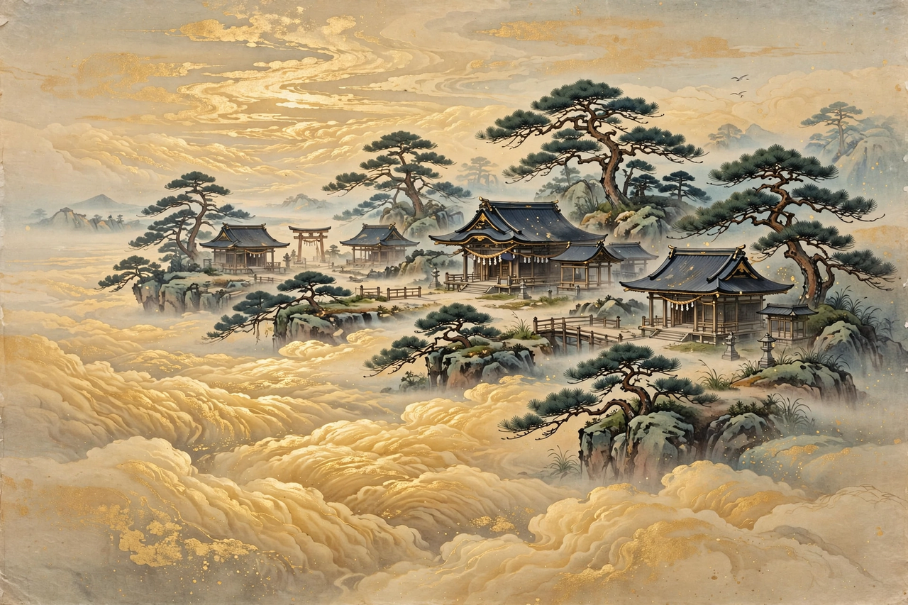

| Takamagahara | |
|---|---|
| Japanese | 高天原 ("Plain of High Heaven") |
| Tradition | Shinto mythology |
| Ruler | Amaterasu |
| Sources | Kojiki, Nihon Shoki |
| Contrasted with | Ashihara-no-Nakatsukuni (the earthly realm), Yomi (the underworld) |

Takamagahara (Japanese: 高天原, "Plain of High Heaven") is, in Shinto mythology, the dwelling place of the heavenly kami (gods) and the home of the sun goddess Amaterasu. It is described in the earliest Japanese chronicles, the Kojiki (712) and the Nihon Shoki (720).
In the Japanese creation myth, Takamagahara is the first realm to come into existence as the universe begins to take shape, preceding the formation of the earth. The earliest kami — the five Kotoamatsukami, including Amenominakanushi — appear there, followed by the seven generations of the Age of the Gods, culminating in Izanagi and Izanami, who descend to create the Japanese islands.
Takamagahara is connected to the earthly realm, Ashihara-no-Nakatsukuni, by the floating bridge of heaven, Ame-no-ukihashi, from which Izanagi and Izanami stirred the sea with the jewelled spear to create the first island. In the myth of the tenson kōrin, Amaterasu sends her grandson Ninigi-no-Mikoto down from Takamagahara to rule the earth, bearing the Three Sacred Treasures; his great-grandson becomes Emperor Jimmu, the legendary first emperor of Japan.
Takamagahara is also the setting of the myth in which the storm god Susanoo rampages through Amaterasu's halls, driving her to hide in the Heavenly Rock Cave and plunging the world into darkness until the other kami lure her out — the episode that gives rise to the sacred dance kagura.